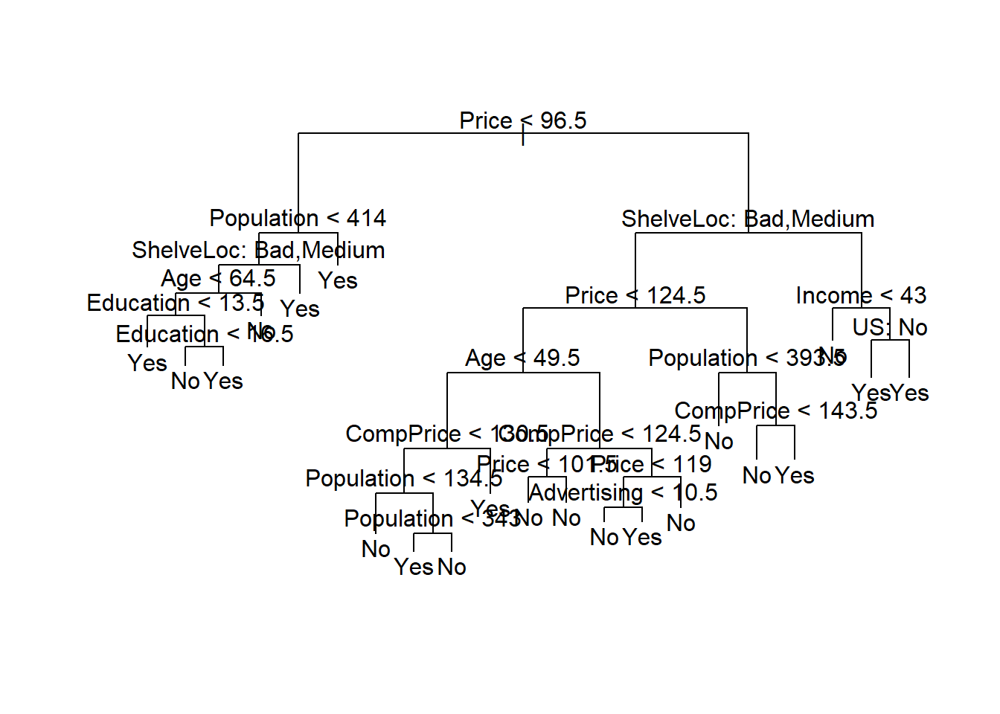
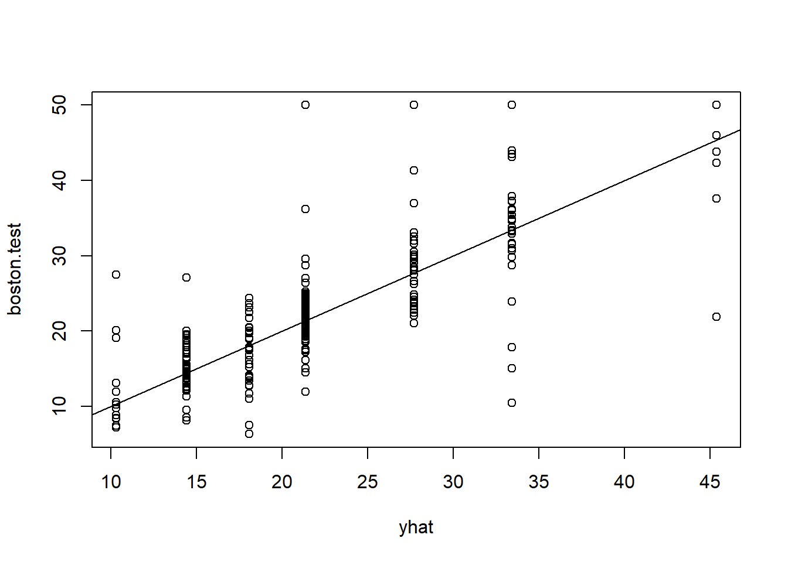
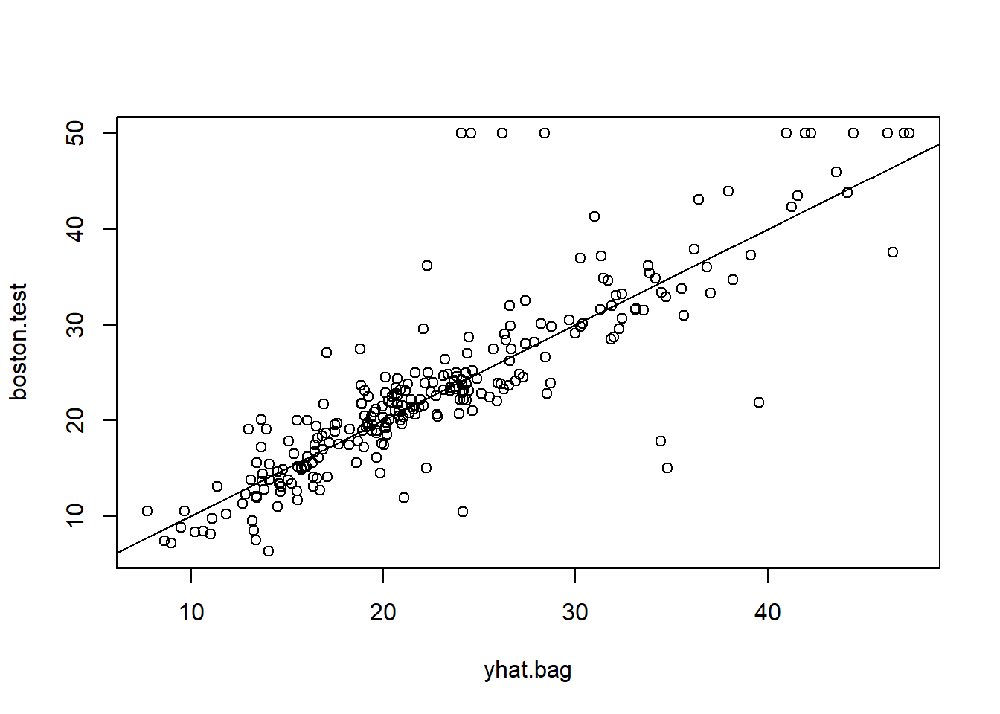
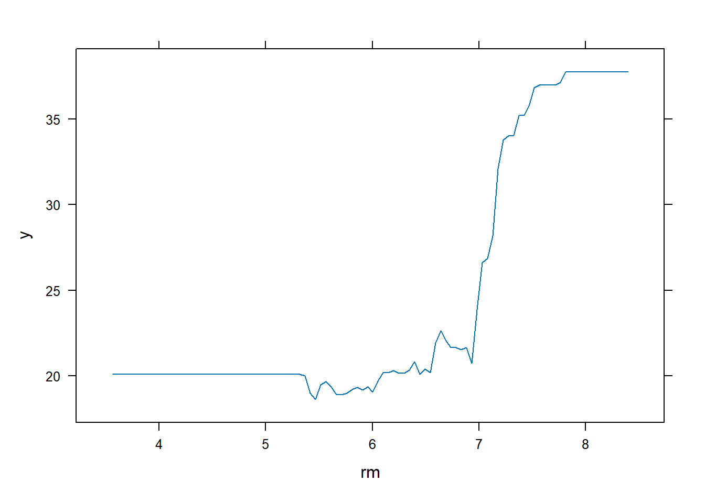
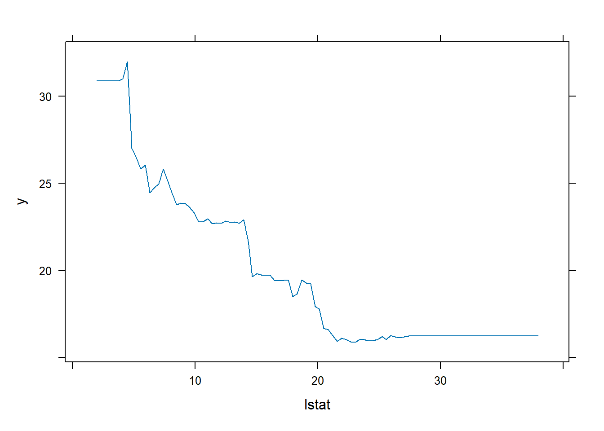

Demonstration 2: The Basics of Decision Trees and Related Methods
In this demonstration, you will learn about decision trees: regression trees are used when the outcome is quantitative and classification trees used when the outcome is categorical.
The basics are quite simple (even simpler than linear regression!): we split the predictor space to a number of regions and the prediction for every outcome in a region is the mean (for regression) or mode (for classification) of the observations in that region. Given that the structure of decision trees resemble human decision-making (to a certain extent) and that the output can be easily illustrated, this makes them quite easy to interpret, even by non-experts. Also, there is no need for dummy variables since trees easy handle categorical predictors.
We will explore each of these in greater detail in the walkthrough below. Before beginning, you will need to install and load the gbm, tree, and randomForest packages. The tree library is used to construct classification and regression trees.
Decision Trees
Classification Trees
For the tasks below, you will require the Carseats dataset. This dataset is part of the ISRL2 package from the core textbook (James et. al 2021). By loading the package, the Carseats dataset will load automatically.
The Carseats is a simulated dataset on sales of child car seats at different stores. There are 400 observations on 11 variables.
Sales: Unit sales (in thousands) at each location
CompPrice: Price charged by competitor at each location
Income: Community income level (in thousands of dollars)
Advertising: Local advertising budget for company at each location (in thousands of dollars)
Population: Population size in region (in thousands)
Price: Price company charges for car seats at each site
ShelveLoc: A factor with levels Bad, Good and Medium indicating the quality of the shelving location for the car seats at each site
Age: Average age of the local population
Education: Education level at each location
Urban: A factor with levels No and Yes to indicate whether the store is in an urban or rural location
US: A factor with levels No and Yes to indicate whether the store is in the US or not
We will now explore how classification trees can be used to predict whether sales of car seats are high or low. Here Sales is continuous and so we create a new binary variable such that all unit sales over 8,000 dollars are classed as ‘Yes’ (i.e. so high sales) and everything else and ‘No’ (i.e. so low sales). We store this as a vector with our response values for the test set for evaluating our model later and we also add this as a variable in our dataset.
attach(Carseats)
High <- factor(ifelse(Sales <= 8, "No", "Yes"))
Carseats <- data.frame(Carseats, High)Let’s now split the data into training and test sets. We randomly select half of the observations from the dataset for our training set and we allocate the rest to the test set (Carseats.test).
Now let’s fit the tree using the tree() function from the package tree that you have just installed. As shown below, the basic syntax is quite simple. Since we want to use all variables in the data object as predictors, there is no need to list them all in the formula. Instead, we can simply use a dot. However, we must drop the original Sales variable for obvious reasons. To fit the tree to the training data only, we must subset the Carseats data using the train object which contains a vector of the randomly selected indices that tells R which values to subset.
To better understand trees, let’s explore the structure of our tree visually first. We simply specify the name of the model and complement the plot() function with the function text() within which we set the pretty argument to 0 in order to include the category names for categorical predictors.

Our first split occurs at Price, which indicates that this is the feature (i.e. variable) that is most important for classifying sales as high or not. From this point forward, further splits are made and the features at which these splits are made are referred to as internal nodes. The tree splits first on Price, thus dividing the dataset into two subsets based on whether Price is less than \(96.5\). This is our split criterion. The left side represents the subset within which price is less than \(96.5\) whilst the right side represents the subset within which price is equal to or greater than \(96.5\).
Let’s first consider the left side of the tree. The subsequent internal node is Population and the split criterion is such that population is less than \(414\) which means that within the subset where price is less than \(96.5\) (so the left side), the next most significant predictor is Population. Within population, it is ShelveLoc, then Age and so on. Hence, the tree continues to split based on these features and values, further refining the subsets.
The right side represents the subset within which price is greater than or equal to \(96.5\). Our subsequent node after Price is ShelveLoc which is a factor variable. This means that within the subset where Price is greater than or equal to \(96.5\), the location of the shelves is the next most significant predictor. From there onward, as on the left side, the tree continues to split further and further at subsequent internal nodes according to specific split criteria. Therefore, since the feature at which the first split occurs represents the feature with the most importance regarding classification, the internal nodes that are closest to this node are generally more important than those closer to the bottom of the tree.
The vertical lines that connect a feature with an outcome are called branches. Each branch represents a decision based on a feature value, which then progresses to the next internal node or finally, to a leaf node. A leaf node (also called a terminal node) are the nodes at the bottom of the tree that provide the final classification. Each leaf node represents a final decision regarding the classification (e.g., “Yes” or “No” for high sales). The path from the root to a leaf node gives the sequence of decisions made to classify an observation. Essentially, the splits on either side simply refine the classification until a decision is reached.
So we start off at the first split where \(Price < 96.5\). If \(Price < 96.5\) is true, we move on to the next node on the left hand-side which is \(Population < 414\). We follow subsequent nodes and branches based on the feature values of the observation and we reach a terminal (leaf) node with the final classification (e.g., “Yes” for high sales). So a terminal node is one from which no further splits occur. In summary, our tree make use of features to split the data into subsets to classify whether sales are high or not.
Now let’s explore the output of the tree in greater detail. If we just type the name of the tree object, R prints output detailed information about the tree structure that we illustrated . The first line of the output: node), split, n, deviance, yval, (yprob) * denotes terminal node describes what each component of the output means.
## node), split, n, deviance, yval, (yprob)
## * denotes terminal node
##
## 1) root 200 270.000 No ( 0.59500 0.40500 )
## 2) Price < 96.5 40 47.050 Yes ( 0.27500 0.72500 )
## 4) Population < 414 31 40.320 Yes ( 0.35484 0.64516 )
## 8) ShelveLoc: Bad,Medium 25 34.300 Yes ( 0.44000 0.56000 )
## 16) Age < 64.5 17 20.600 Yes ( 0.29412 0.70588 )
## 32) Education < 13.5 7 0.000 Yes ( 0.00000 1.00000 ) *
## 33) Education > 13.5 10 13.860 Yes ( 0.50000 0.50000 )
## 66) Education < 16.5 5 5.004 No ( 0.80000 0.20000 ) *
## 67) Education > 16.5 5 5.004 Yes ( 0.20000 0.80000 ) *
## 17) Age > 64.5 8 8.997 No ( 0.75000 0.25000 ) *
## 9) ShelveLoc: Good 6 0.000 Yes ( 0.00000 1.00000 ) *
## 5) Population > 414 9 0.000 Yes ( 0.00000 1.00000 ) *
## 3) Price > 96.5 160 201.800 No ( 0.67500 0.32500 )
## 6) ShelveLoc: Bad,Medium 135 154.500 No ( 0.74074 0.25926 )
## 12) Price < 124.5 82 107.700 No ( 0.63415 0.36585 )
## 24) Age < 49.5 34 45.230 Yes ( 0.38235 0.61765 )
## 48) CompPrice < 130.5 21 28.680 No ( 0.57143 0.42857 )
## 96) Population < 134.5 6 0.000 No ( 1.00000 0.00000 ) *
## 97) Population > 134.5 15 20.190 Yes ( 0.40000 0.60000 )
## 194) Population < 343 7 5.742 Yes ( 0.14286 0.85714 ) *
## 195) Population > 343 8 10.590 No ( 0.62500 0.37500 ) *
## 49) CompPrice > 130.5 13 7.051 Yes ( 0.07692 0.92308 ) *
## 25) Age > 49.5 48 46.330 No ( 0.81250 0.18750 )
## 50) CompPrice < 124.5 28 14.410 No ( 0.92857 0.07143 )
## 100) Price < 101.5 8 8.997 No ( 0.75000 0.25000 ) *
## 101) Price > 101.5 20 0.000 No ( 1.00000 0.00000 ) *
## 51) CompPrice > 124.5 20 25.900 No ( 0.65000 0.35000 )
## 102) Price < 119 14 19.410 No ( 0.50000 0.50000 )
## 204) Advertising < 10.5 9 11.460 No ( 0.66667 0.33333 ) *
## 205) Advertising > 10.5 5 5.004 Yes ( 0.20000 0.80000 ) *
## 103) Price > 119 6 0.000 No ( 1.00000 0.00000 ) *
## 13) Price > 124.5 53 33.120 No ( 0.90566 0.09434 )
## 26) Population < 393.5 34 0.000 No ( 1.00000 0.00000 ) *
## 27) Population > 393.5 19 21.900 No ( 0.73684 0.26316 )
## 54) CompPrice < 143.5 13 7.051 No ( 0.92308 0.07692 ) *
## 55) CompPrice > 143.5 6 7.638 Yes ( 0.33333 0.66667 ) *
## 7) ShelveLoc: Good 25 31.340 Yes ( 0.32000 0.68000 )
## 14) Income < 43 7 8.376 No ( 0.71429 0.28571 ) *
## 15) Income > 43 18 16.220 Yes ( 0.16667 0.83333 )
## 30) US: No 6 8.318 Yes ( 0.50000 0.50000 ) *
## 31) US: Yes 12 0.000 Yes ( 0.00000 1.00000 ) *So let’s take 2) Price < 96.5 40 47.050 Yes( 0.27500 0.72500 )` as an example.
2)denotes the unique identifier of the node (so this is node 2),
Price < 96.5is the condition of the split40is the number of observations that reach the node *in this case 40)47.050is the deviance (i.e. impurity of the node after the split)Yesis the predicted class for this node( 0.27500 0.72500 )are the class probabilities and so the proportion of observations belonging to each class at the node (in other words the fraction of observations in that branch that take on values ofYesandNo)
- the
*denotes a terminal node
Now you may wonder about the root node (1)). This node (node 1) represents the entire dataset with 200 observations in total, the most common class at the root node (in this case No) and the proportion of classes (i.e. Yes and No) in the dataset. The root node corresponds to the decision to split at Price < 96.5 in the graphic, but essentially, it represents the entire dataset before any splits are made; as you can see, there is no information about split for the root node itself since it doesn’t split. In other words, the root node starts the solitting process, and each subsequent split aims to further refine the classification by reducing impurity (i.e. variance), with the deviance value helping in measuring the effectiveness of each split. Therefore Price < 96.5 is the condition for the split the root node.
To better understand how each feature and split contribute to the final prediction, we must consider not only explore the structure as a whole, but also consider how the data are split into branches based on different features, how probabilities change at each node, and finally, what final predictions are provided by the terminal nodes given the path from the root node.
Starting at the root node, the splits are conducted according to the following conditions: Price < 96.5, Population < 414, ShelveLoc: Bad, Medium, Age < 64.5, and Education < 13.5.
Therefore:
- Price < 96.5: Among stores with prices lower than 96.5 (40 stores in total), 72.5% are likely have high sales (hence High = “Yes”).
- Population < 414: Of these, 64.5% in lower population areas tend to have high sales.
- ShelveLoc: Bad, Medium: Among these, 56.0% stores with poor shelving location still tend to have high sales
- Age < 64.5: Of these, in regions where the average age of the population is less than 64.5, 70.6% of stores are still likely have high sales
- Education < 13.5: Finally, in areas where education is less than 13.5, stores are still likely to have high sales with 100% probability.
As with other models we’ve explored so far, summary() also comes in handy. The output contains additional information.
##
## Classification tree:
## tree(formula = High ~ . - Sales, data = Carseats, subset = train)
## Variables actually used in tree construction:
## [1] "Price" "Population" "ShelveLoc" "Age" "Education"
## [6] "CompPrice" "Advertising" "Income" "US"
## Number of terminal nodes: 21
## Residual mean deviance: 0.5543 = 99.22 / 179
## Misclassification error rate: 0.115 = 23 / 200- variables actually used in tree construction: here we note 9 variables (Urban is missing)
- number of terminal nodes: also referred to as ‘leaves’, the tree has 21 terminal nodes; these represent the final decision or classification outcome.
- residual mean deviance: For classification trees, the deviance is given by \(-2 \sum_m \sum_k n_{mk} \log \hat{p}_{mk}\), where \(n_{mk}\) is the number of observations in the \(m\)th terminal node that belong to the \(k\)th class. The smaller the deviance, the better the fit to the training data. The residual mean deviance is the deviance divided by \(n-|{T}_0|\).
- misclassification error rate: this is the training error rate, which in this case is \(11.5\%\). This seems quite good.
Now that you have a good grasp of how trees are built and interpreted, let’s evaluate the performance of the algorithm on the test data.The predict() function can be used for this purpose. In the case of a classification tree, the argument type = "class" instructs R to return the actual class prediction. This approach leads to correct predictions for around \(77 \%\) of the locations in the test data set.
High.test <- High[-train]
Carseats.test <- Carseats[-train, ]
tree.pred <- predict(tree.carseats, Carseats.test, type = "class")
table(tree.pred, High.test)## High.test
## tree.pred No Yes
## No 104 33
## Yes 13 50## [1] 0.77(If you re-run the predict() function then you might get slightly different results, due to “ties”: for instance, this can happen when the training observations corresponding to a terminal node are evenly split between Yes and No response values.)
Next, we consider whether pruning the tree might lead to improved results. Pruning is used to reduce size and complexity of the tree and the main goal is to remove parts of the tree that do not provide additional power in predicting target variables. Pruning is therefore very important in preventing overfitting, improving interpretability and enhancing the performance of the tree. One approach is cost-complexity pruning which involves pruning the tree such that it balances the trade-off between the accuracy and size of the tree (by minimising the cost-complexity criterion).
Ok so let’s see how this works in practice. The function cv.tree() performs \(k\)-fold cross-validation in order to determine the optimal level of tree complexity (i.e. to find the deviance or number of misclassifications as a function of the cost-complexity parameter \(k\)). This approach involves growing the tree to its full depth and then removing nodes that provide little predictive power. We use the argument FUN = prune.misclass to tell R that we want the classification error rate to guide the cross-validation and pruning process, rather than the default for the cv.tree() function, which is deviance. The cv.tree() function reports the number of terminal nodes of each tree considered (size) as well as the corresponding error rate and the value of the cost-complexity parameter used (k).
The output contains several pieces of important information such as size, deviance and the values for \(k\). Each of these is paired with the other, and so the lowest deviance which is 74 (i.e. 74 cross-validation errors) corresponds to a tree of size 9 (i.e. a tree with 9 terminal nodes) and a value of 1.4 for \(k\). The lower the value for \(k\), the less pruning required.
## [1] "size" "dev" "k" "method"## $size
## [1] 21 19 14 9 8 5 3 2 1
##
## $dev
## [1] 75 75 75 74 82 83 83 85 82
##
## $k
## [1] -Inf 0.0 1.0 1.4 2.0 3.0 4.0 9.0 18.0
##
## $method
## [1] "misclass"
##
## attr(,"class")
## [1] "prune" "tree.sequence"We can also plot the error rate as a function of both size and k.
par(mfrow = c(1, 2))
plot(cv.carseats$size, cv.carseats$dev, type = "b")
plot(cv.carseats$k, cv.carseats$dev, type = "b")
We now apply the prune.misclass() function in order to prune the tree to obtain the nine-node tree as indicated by the cross-validation results. We specify the size using the best argument.
prune.carseats <- prune.misclass(tree.carseats, best = 9)
plot(prune.carseats)
text(prune.carseats, pretty = 0)
How well does this pruned tree perform on the test data set? Once again, we apply the predict() function.
## High.test
## tree.pred No Yes
## No 97 25
## Yes 20 58## [1] 0.775Now \(77.5 \%\) of the test observations are correctly classified, so not only has the pruning process produced a more interpretable tree, but it has also slightly improved the classification accuracy.
To illustrate what happens if we increase the size of the tree, let’s set the best argument to 14. As you can see, a tree of size 14 produces a more complex tree that is somewhat harder to interpret and the fraction of correct predictions is also slightly lower.
prune.carseats <- prune.misclass(tree.carseats, best = 14)
plot(prune.carseats)
text(prune.carseats, pretty = 0)
## High.test
## tree.pred No Yes
## No 102 31
## Yes 15 52## [1] 0.77Regression Trees
For the tasks below, you will require the Boston dataset. This dataset is part of the ISRL2 package from the core textbook (James et. al 2021).
The Boston is a datast that contains housing values in 506 suburbs of Boston. There are 13 variables:
crim: per capita crime rate by town.
zn: proportion of residential land zoned for lots over 25,000 sq.ft.
indus: proportion of non-retail business acres per town.
chas: Charles River dummy variable (= 1 if tract bounds river; 0 otherwise).
nox: nitrogen oxides concentration (parts per 10 million).
rm: average number of rooms per dwelling.
age: proportion of owner-occupied units built prior to 1940.
dis: weighted mean of distances to five Boston employment centers.
rad: index of accessibility to radial highways.
tax: full-value property-tax rate per $10,000.
ptratio: pupil-teacher ratio by town.
lstat: lower status of the population (percent).
medv: median value of owner-occupied homes in $1000s.
We will now explore how a regression decision tree can be used to predict the median value of owner-occupied homes (medv) using all variables in the dataset.
Let’s split the data into a training and test set.
We fit the model in the same way as we did for the classification tree.
##
## Regression tree:
## tree(formula = medv ~ ., data = Boston, subset = train)
## Variables actually used in tree construction:
## [1] "rm" "lstat" "crim" "age"
## Number of terminal nodes: 7
## Residual mean deviance: 10.38 = 2555 / 246
## Distribution of residuals:
## Min. 1st Qu. Median Mean 3rd Qu. Max.
## -10.1800 -1.7770 -0.1775 0.0000 1.9230 16.5800The structure of the results are similar to those of the classification tree. But note that for our model here, only four variables were used to construct the tree, namely rm, lstat, crim, age. We saw this already in the case of the classification tree where one of the variables was missing.
Why is this the case? The algorithm selects variables according to their role in improving predictive accuracy at each split. The reason for this is that we did not add any further arguments to this function and so we allowed R to use the default settings for tree growth, which include thresholds for minimum deviance, minimum node size, and maximum tree depth. By not specifying the control parameter, the function uses default settings for tree growth, which include thresholds for minimum deviance, minimum node size, and maximum tree depth (31), preventing the tree from growing excessively large. However, it is important to note that we could have fit a much bigger tree, by passing control = tree.control(nobs = length(train), mindev = 0) into the tree() function.
Since in our case only four variables were selected, this suggests that only these four provide a sufficiently significant improvement in reducing variance at different splits. There are several reasons for this, besides the predictive power of the variables and the associated impurity, such as sample size, correlation among variables, and complexity. We also note that there are 7 terminal nodes, and that the residual mean deviance is 10.38. In the context of a regression tree, the deviance is simply the sum of squared errors for the tree.
## node), split, n, deviance, yval
## * denotes terminal node
##
## 1) root 253 19450.0 21.79
## 2) rm < 6.9595 222 6794.0 19.35
## 4) lstat < 14.405 135 1816.0 22.51
## 8) rm < 6.543 111 763.1 21.38 *
## 9) rm > 6.543 24 256.5 27.73 *
## 5) lstat > 14.405 87 1554.0 14.46
## 10) crim < 11.4863 61 613.8 16.23
## 20) age < 93.95 30 245.7 18.09 *
## 21) age > 93.95 31 164.1 14.43 *
## 11) crim > 11.4863 26 302.7 10.32 *
## 3) rm > 6.9595 31 1929.0 39.21
## 6) rm < 7.553 16 505.5 33.42 *
## 7) rm > 7.553 15 317.0 45.38 *In terms of the details of each node, the results are structured similarly to a classification tree. So for example, for the root node we have 253 observations, with a total deviance of 19450.0 and a predicted value (mean response) of 21.79. Our most important feature appears to be the average number of rooms per dwelling (rm) and our split criterion is \(rm < 6.9595\).
Let’s visualise the tree.

On the left hand side we have multiple splits corresponding to less than 7 average number of rooms per dwelling whilst of the right side we have a single split corresponding to 7 or more rooms per dwelling. We also note one more split in the same variable before the terminal nodes which tell us the median house prices of owner-occupied homes. For homes in census tracts in which rm >= 7.553, the regression tree predicts a median house price of \(45.38\).
Now we apply \(k\) fold cross-validation and plot the results to see whether pruning the tree will improve performance. The cv.tree() runs \(k\)-fold cross-validation to find the deviance or number of misclassifications as a function of the cost-complexity parameter \(k\).

In this case, the most complex tree under consideration is selected by cross-validation and so we use the unpruned tree to make predictions on the test set.
yhat <- predict(tree.boston, newdata = Boston[-train, ])
boston.test <- Boston[-train, "medv"]
plot(yhat, boston.test)
abline(0, 1)
## [1] 35.28688The test set MSE associated with the regression tree is \(35.29\). The square root of the MSE is therefore around \(5.941\), indicating that this model leads to test predictions that are (on average) within approximately \(5.941\) of the true median home value for the census tract.
Ensemble Methods
Despite the simplicity of decision trees, this approach is not necessarily competitive to other supervised approaches we explored so far in the course, particularly due to high variance, but remember that this depends on context. For example, when dealing with complex and highly non-linear relationships, it is possible for decision trees to outperform more classic supervised learning approaches; we can assess performance using either cross-validation or the validation set approach. Do remember that selecting a statistical learning method by only relying on the test error may not always be sufficient and we may prefer a decision tree simply because it is easier to interpret and illustrate.
Nevertheless, since trees do suffer from high variance and are not very robust with respect to changes in the data, how can we improve prediction accuracy? Well, we can implement approaches that, at their core, rely on regression or classification trees as their main building blocks. These methods are referred to as ensemble methods. Below, we explore bagging, random forests, and boosting.
Bagging
Also called bootstrap aggregation, bagging is essentially bootstrapping as you know it from earlier in the course but this time used in a completely different context, that is, to reduce the variance of a statistical learning method. It is particularly useful in the case of decision trees precisely because these suffer from high variance. Here we consider bagging for in the context of regression trees but it can also be extended to classification trees as well. Also, bagging is not restricted to decision trees but can be used for many regression methods.
In this exercise, we continue with the Boston data and use the bagging approach to predict median value of owner-occupied homes using all variables in the dataset.
Using the randomForest package and the function with the same name, we fit a bagging tree. In addition to the formula, we also must specify the mtry and importance arguments. The argument mtry = 12 tells R that all \(12\) predictors should be considered for each split of the tree, whilst setting the importance argument to TRUE tells R to also assess the importance of the predictors.
set.seed(1)
bag.boston <- randomForest(medv ~ ., data = Boston,
subset = train, mtry = 12, importance = TRUE)Now let’s have a look at the output. Note that the exact results obtained may differ, depending on our R version and version of your randomForest package.
##
## Call:
## randomForest(formula = medv ~ ., data = Boston, mtry = 12, importance = TRUE, subset = train)
## Type of random forest: regression
## Number of trees: 500
## No. of variables tried at each split: 12
##
## Mean of squared residuals: 11.40162
## % Var explained: 85.17Here we have a few pieces of important information. We have 500 trees in total. This means that the bagging procedure built 500 decision trees on different bootstrapped samples of the training data. In other words, for a regression problem, the bagging procedures constructs B regression trees using B bootstrapped training sets, and averages the resulting predictions. There are 12 variables tried at each split; since it uses all predictors (as specified by mtry), the trees are grown deep and are NOT pruned. As we saw earlier with the decision trees, each individual tree will have high variance (and low bias) but since the bagging procedure averages all B trees, then this reduces the variance.
The mean of squared residuals tells us the average squared difference between predicted and actual values. The percent variance explained is \(85.17\%\), which indicates a very good fit.
Right, so how about interpretation? Well, given that with bagging we grow many trees, it is no longer possible to represent the results as a single tree, and so the resulting model can be difficult to interpret. Nevertheless, we can learn more about the importance of each predictor using the varImpPlot() function from the randomForest package that produces dotcharts.

Or we can use the importance() function from the same package.
## %IncMSE IncNodePurity
## crim 24.948900 873.41761
## zn 4.824575 55.59650
## indus 3.185194 111.59825
## chas -1.407962 12.46427
## nox 17.549697 260.21778
## rm 52.852626 12231.53572
## age 18.325696 346.97045
## dis 6.046766 272.36149
## rad 3.677714 66.96846
## tax 10.224698 148.96271
## ptratio 9.254946 145.16605
## lstat 53.389661 4789.60479The first measure is the percent increase in mean squared error (%IncMSE) and is based upon the out-of-bag error estimation which provides an internal measure of model performance without the need for a separate validation set. This is because the out-of-bag observations are observations that were not used to fit the model and were instead used to validate the model (usually only two thirds of the observations are used to fit the model).
The second measure is the increase in node purity (IncNodePurity) which reflects the total decrease in node impurity that results from splits over that variable, averaged over all trees. In the case of regression trees, the node impurity is measured by the training RSS, and for classification trees by the deviance. By far, rm and lstat seem to be the most important predictors of the model.
But how well does this bagged model perform on the test set?
yhat.bag <- predict(bag.boston, newdata = Boston[-train, ])
plot(yhat.bag, boston.test)
abline(0, 1)
## [1] 23.41916The test set MSE associated with the bagged regression tree is lower than the test MSE for an optimally-pruned single tree, but not by much…
We saw earlier that the bagging was performed using 500 trees. We can customise the number of trees by telling R how many trees to ‘grow’ using the ntree() argument.
bag.boston <- randomForest(medv ~ ., data = Boston,
subset = train, mtry = 12, ntree = 25)
yhat.bag <- predict(bag.boston, newdata = Boston[-train, ])
mean((yhat.bag - boston.test)^2)## [1] 25.75055With 25 trees, we see a slight increase in the test MSE and if we have a look at the results, we also see a reduction in the variance explained.
##
## Call:
## randomForest(formula = medv ~ ., data = Boston, mtry = 12, ntree = 25, subset = train)
## Type of random forest: regression
## Number of trees: 25
## No. of variables tried at each split: 12
##
## Mean of squared residuals: 13.51568
## % Var explained: 82.42Random Forests
Bagging is a special case of a random forest which can be seen as an improvement over bagged trees because it decorrelates the trees. In other words, the random forest algorithm does not consider a majority of the available predictors at each split but only a subset. In this way, it address the limitation of bagged trees looking very similar to one another due to strong influences of particular predictors. As we saw earlier, bagging did improve the performance of the model but this improvement was not very dramatic relative to the individual optimally pruned tree we built at the beginning of the demonstration. Hence, random forests can make trees more reliable precisely because the average of the resulting trees have less variance.
Growing a random forest is accomplished in exactly the same way as bagging, except that we use a smaller value of the mtry argument. By default, randomForest() uses \(p/3\) variables when building a random forest of regression trees, and \(\sqrt{p}\) variables when building a random forest of classification trees. Here we will use mtry = 6.
set.seed(1)
rf.boston <- randomForest(medv ~ ., data = Boston,
subset = train, mtry = 6, importance = TRUE)
yhat.rf <- predict(rf.boston, newdata = Boston[-train, ])
mean((yhat.rf - boston.test)^2)## [1] 20.06644The test set MSE is lower than the test MSE for bagging and much lower than that of the decision tree.
Using the importance() function, we can view the importance of each variable.
## %IncMSE IncNodePurity
## crim 19.435587 1070.42307
## zn 3.091630 82.19257
## indus 6.140529 590.09536
## chas 1.370310 36.70356
## nox 13.263466 859.97091
## rm 35.094741 8270.33906
## age 15.144821 634.31220
## dis 9.163776 684.87953
## rad 4.793720 83.18719
## tax 4.410714 292.20949
## ptratio 8.612780 902.20190
## lstat 28.725343 5813.04833Or display the resuts as dotcharts.

The results indicate that across all of the trees considered in the random forest, the wealth of the community (lstat) and the house size (rm) are by far the two most important variables.
Boosting
Finally, let’s consider boosting that works somewhat similarly to bagging except that it grows trees sequentially. In other words, each tree is built to correct the errors of the previous trees by focusing on the residuals (errors) of the model up to that point. Therefore, many small, shallow trees incrementally improve the performance of the model which often requires a large number of trees. There are three tuning parameters to boosting: the number of trees B (seleced using cross-validation), the shrinkage parameter \(\lambda\) (lambda) which controls the rate at which boosting learns, and the number of splits which controls complexity.
In this example, we focus on using boosting for a regression tree but this approach can also be used with other regression or classification methods.
Here, we continue with the Boston dataset and fit a boosting regression tree on the same model as earlier. To implement boosting, we can use the gbm() function from the gbm package.
We run gbm() with the option distribution = "gaussian" since this is a regression problem. The argument n.trees = 5000 indicates that we want \(5000\) trees, and the option interaction.depth = 4 limits the depth of each tree. Hence, we are going for many, many trees of small size to incrementally improve the model.
set.seed(1)
boost.boston <- gbm(medv ~ ., data = Boston[train, ],
distribution = "gaussian", n.trees = 5000,
interaction.depth = 4)For boosting, the summary() function works in a slightly different way. It produces a relative influence plot and also outputs the relative influence statistics.

## var rel.inf
## rm rm 44.48249588
## lstat lstat 32.70281223
## crim crim 4.85109954
## dis dis 4.48693083
## nox nox 3.75222394
## age age 3.19769210
## ptratio ptratio 2.81354826
## tax tax 1.54417603
## indus indus 1.03384666
## rad rad 0.87625748
## zn zn 0.16220479
## chas chas 0.09671228We again see that lstat and rm are by far the most important variables.
We can also produce partial dependence plots for these two variables. The plots facilitate our interpretation of complex models results from ensemble methods (or other complex non-linear methods) by allowing us to visualise the effect of a single predictor on the response.


These plots illustrate the marginal effect of the selected variables on the response after integrating out the other variables. In this case, as we might expect, median house prices are increasing with rm and decreasing with lstat.
We now use the boosted model to predict medv on the test set:
yhat.boost <- predict(boost.boston,
newdata = Boston[-train, ], n.trees = 5000)
mean((yhat.boost - boston.test)^2)## [1] 18.39057The test MSE obtained is the lowest thus far and therefore superior to the test MSE of random forests and bagging. If we want to, we can perform boosting with a different value of the shrinkage parameter \(\lambda\). The default value is \(0.001\), but this is easily modified. Here we take \(\lambda=0.2\).
boost.boston <- gbm(medv ~ ., data = Boston[train, ],
distribution = "gaussian", n.trees = 5000,
interaction.depth = 4, shrinkage = 0.2, verbose = F)
yhat.boost <- predict(boost.boston,
newdata = Boston[-train, ], n.trees = 5000)
mean((yhat.boost - boston.test)^2)## [1] 16.54778In this case, using \(\lambda=0.2\) leads to an even lower test MSE than \(\lambda=0.001\). Although typical values are 0.01 or 0.001, the choice for lambda will depend on the problem at hand.
In this demonstration, you have learned the basics of decision trees, bagging, random forests, and boosting. For a more in-depth exploration of these topics, please see the reading assigned for this section.